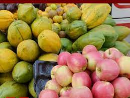

Contact Us!
Contact us for your favourite fresh organic food. We provide you with healthy food that will keep you refreshed with your family.
5808 Dar es salaam
Kinondoni, Dar es salaam
info@bountifulfoods.co.tz
0658777269
Fresh, Healthy and Organic.
Bountiful Foods Company.
Bountiful Foods is a company that was established to provide the best healthy foods to the local population and by extension the tourists.
In an era where junk foods are the order of the day, we believe that providing the best healthy alternative foods will promote a healthy lifestyle
We have been in existence fo 15 years serving our clients faithfully and eradicating diseases attributed to poor diet. Consume our fresh organic food and live healthy.